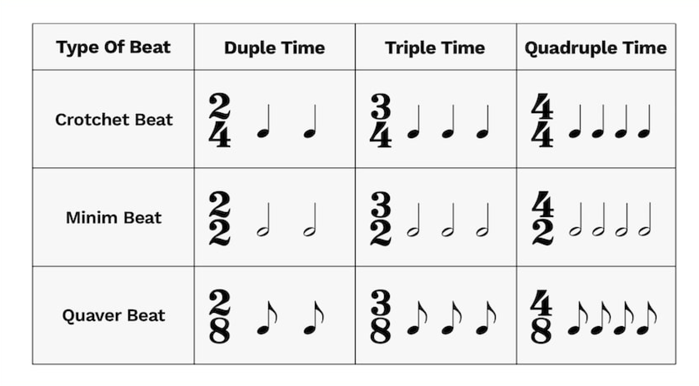

The first drums came about in 5500 BC. The creator of the drum is not known. They were intoduced in Neolitic cultures from China these drums were created when they were trying to find new uses for allifator skins. Animal skins are still used today for all sorts of drums. Nowadays they are different platics like polyester or Mylar. They would then be discovered in a lot of the other countries all across the world. Drumming was very usful back then because you were able to communicate and dance to the beats of the music.
The modern drumset consists of the Snare Drum, Bass Drum, High Hat, Tom-tom, Floor Tom, Ride Cymbal and Crash Cymbal. The different instruments that make up the drum set were founded in different times. The snare drum was developed around 1300 AD. The snare drum began to be better manufactured in the 1600s. With this better manufacturing it became easier to adjust the tightness of the drum head which could create brighter and more comlex rhythem sections and sounds.
The drumset we have in the present time was not collectivly made together, These different instruments from many countries all across the world were individually brought together one at time with many iterations which finally created the drumset we have now. The main cause which lead to the creation of drumsets were port cities. These port cities held a lot of immigrants, the chinese immigrants that were moved over by choice or by forced labour brought with them there drums which are now the tom-toms we use today. The snare and bass drum came frome the european militaries that were worn on there backs, in doing so the american armies also followed. Finally the cymbals were evolved form bronze cisterns that came from turkey and china, they were later pounded flatter and used in european militaries for military musicals and operas.
In this portion you will learn how to hold a drumstick, there are two ways to hold a drumstick to get the most optimal sound productions and bounce back from the drums. There is the traditional way to hold a drumstick which is used more in large scale bands or in the military. The matched way is the moore common way to hold a drumstick if your playing on a drumset. This method makes it easier to hit all the portions of the drumset with the same production. There are a lot of other different types of grips such as the german,french and the american grip. We recommend that you start off with the matched and traditional grip so you can learn the basic fundementals, after you have got that down then you explore other types of grips and styles
This part of the page you will learn how to play the drums and read the sheet music. Drumming is very easy to learn. The simplist version of drumming is clapping to the beat of the music seen in many concerts. We can apply that exact principle to drumming. The precussion of the band keeps the whole band on check that they are on beat, but they can also slow down the band if they are not playing at a consistent speed. Speed/timing of the beat is show by the timing. The normal time you would see if 4/4 timing but there is also 2/4,3/4 and 3/8. 
When learning the Drums it is great to start off slow so you get the right muscle memomory. Here are 5 beats that will get you setup for you to develop your muscle memory.
These next few beat are more challenging with a few more combination of beats from the last sheet. These beats also introduce fills which use the toms in between beats.